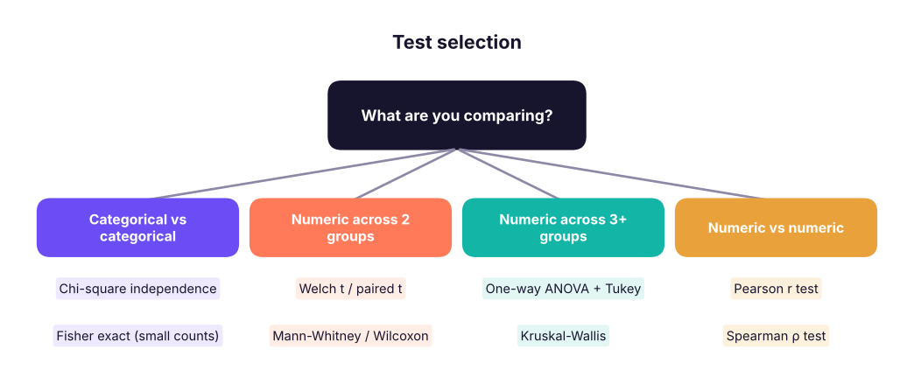
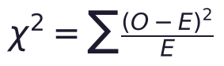
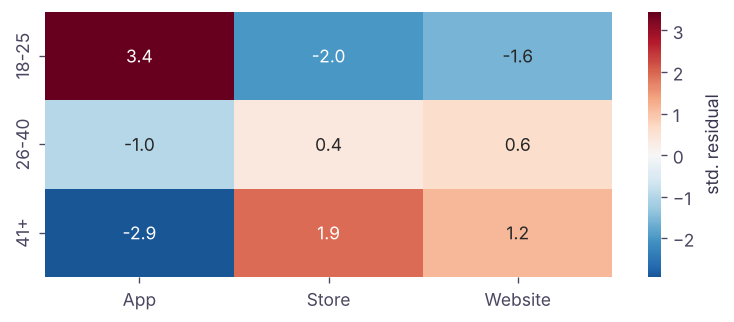
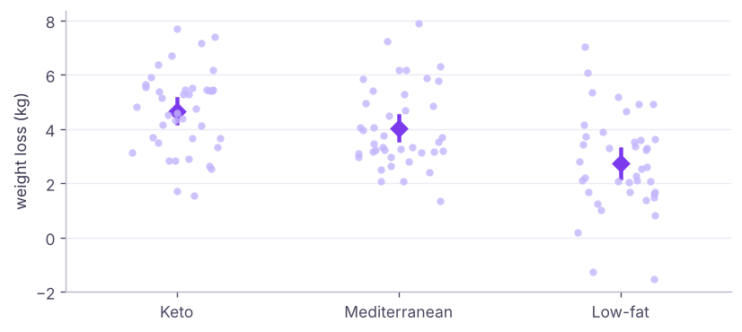

Hypothesis Testing II: Chi-Square, ANOVA, Non-Parametric Tests and Correlation Tests
Test relationships between categories with chi-square tests, compare three or more groups with one-way ANOVA and Tukey post-hoc tests, use non-parametric alternatives (Mann-Whitney, Wilcoxon, Kruskal-Wallis) when assumptions fail, test correlations, and control false discoveries when running many tests.
- Run chi-square tests of independence and goodness of fit and read expected counts
- Compare several group means with one-way ANOVA and locate differences with Tukey HSD
- Choose parametric vs non-parametric tests and run Mann-Whitney, Wilcoxon and Kruskal-Wallis
- Test correlations with Pearson and Spearman
- Adjust for multiple comparisons (Bonferroni, Benjamini-Hochberg)
Which test? A decision map

| Parametric (assumes ~normal) | Non-parametric (ranks; fewer assumptions) |
|---|---|
| One-sample / paired t | Wilcoxon signed-rank |
| Independent t (Welch) | Mann-Whitney U |
| One-way ANOVA | Kruskal-Wallis |
| Pearson correlation | Spearman correlation |
Parametric tests are more powerful when their assumptions hold; non-parametric tests are safer for small, skewed samples, ordinal data and outliers.
Chi-square test of independence
Case. A retailer surveyed 600 customers: is the preferred shopping channel (App, Store, Website) related to age group?
import pandas as pd, numpy as np
from scipy import stats
c = pd.read_csv("channel_survey.csv")
obs = pd.crosstab(c.age_group, c.preferred_channel)
print(obs, "\n")
print((pd.crosstab(c.age_group, c.preferred_channel, normalize="index") * 100).round(1))
res = stats.chi2_contingency(obs)
print(f"\nχ² = {res.statistic:.2f}, df = {res.dof}, p = {res.pvalue:.2e}")
print("expected counts if independent:\n", pd.DataFrame(res.expected_freq, index=obs.index, columns=obs.columns).round(1))
n = obs.values.sum(); cramers_v = np.sqrt(res.statistic / (n * (min(obs.shape) - 1)))
print(f"Cramér's V = {cramers_v:.2f} (effect size: 0.1 small, 0.3 medium, 0.5 large)")preferred_channel App Store Website age_group 18-25 106 47 65 26-40 72 70 90 41+ 31 56 63 preferred_channel App Store Website age_group 18-25 48.6 21.6 29.8 26-40 31.0 30.2 38.8 41+ 20.7 37.3 42.0 χ² = 33.67, df = 4, p = 8.71e-07 expected counts if independent: preferred_channel App Store Website age_group 18-25 75.9 62.9 79.2 26-40 80.8 66.9 84.3 41+ 52.2 43.2 54.5 Cramér's V = 0.17 (effect size: 0.1 small, 0.3 medium, 0.5 large)

The test compares observed counts with the counts expected if age and channel were independent. p < 0.001, so channel preference depends on age: 18–25-year-olds favour the app (49%), customers over 41 favour stores and the website. Cramér's V ≈ 0.17 shows a modest association.

Assumptions: independent observations and expected counts of at least 5 in (almost) every cell; otherwise combine categories or use Fisher's exact test (stats.fisher_exact for 2 × 2).
Goodness of fit
Does an observed distribution match an expected one?
shares_expected = np.array([0.35, 0.30, 0.35]) # last year's channel mix
observed = obs.sum().reindex(["App", "Store", "Website"]).to_numpy()
gof = stats.chisquare(observed, f_exp=shares_expected * observed.sum())
print(observed, (shares_expected * observed.sum()).round(0), f"χ² = {gof.statistic:.2f}, p = {gof.pvalue:.3f}")[209 173 218] [210. 180. 210.] χ² = 0.58, p = 0.748
One-way ANOVA
Case. 120 volunteers were randomly assigned to Keto, Low-fat or Mediterranean diets for 8 weeks. Do average weight losses differ?
Running three t-tests inflates the false-positive rate (1 − 0.95³ ≈ 14%). ANOVA tests all means at once: H₀: μ₁ = μ₂ = μ₃.
d = pd.read_csv("diet_study.csv")
print(d.groupby("diet").weight_loss_kg.agg(["count", "mean", "std"]).round(2))
groups = [g.weight_loss_kg for _, g in d.groupby("diet")]
print("Levene equal variances p =", round(stats.levene(*groups).pvalue, 3), "| Shapiro p per group:", [round(float(stats.shapiro(g).pvalue), 3) for g in groups])
f = stats.f_oneway(*groups)
print(f"F = {f.statistic:.2f}, p = {f.pvalue:.2e}")
grand = d.weight_loss_kg.mean()
ss_between = sum(len(g) * (g.mean() - grand) ** 2 for g in groups); ss_total = ((d.weight_loss_kg - grand) ** 2).sum()
print(f"η² (share of variance explained by diet) = {ss_between / ss_total:.2f}")count mean std diet Keto 40 4.65 1.49 Low-fat 40 2.75 1.78 Mediterranean 40 4.03 1.50 Levene equal variances p = 0.615 | Shapiro p per group: [0.655, 0.698, 0.036] F = 14.74, p = 1.96e-06 η² (share of variance explained by diet) = 0.20
ANOVA splits total variation into between-group and within-group parts; F = (between variance) ÷ (within variance). A large F means group means differ more than random noise would suggest.

Post-hoc: which groups differ?
from statsmodels.stats.multicomp import pairwise_tukeyhsd
print(pairwise_tukeyhsd(d.weight_loss_kg, d.diet, alpha=0.05))Multiple Comparison of Means - Tukey HSD, FWER=0.05 ============================================================ group1 group2 meandiff p-adj lower upper reject ------------------------------------------------------------ Keto Low-fat -1.9012 0.0 -2.7496 -1.0529 True Keto Mediterranean -0.6152 0.2015 -1.4636 0.2331 False Low-fat Mediterranean 1.286 0.0014 0.4376 2.1344 True ------------------------------------------------------------
Tukey's HSD compares every pair while keeping the overall error at 5%. Keto and Mediterranean both beat Low-fat; Keto vs Mediterranean is not significant.
Two-way ANOVA (two factors and their interaction) uses statsmodels.formula.api.ols("y ~ C(a) * C(b)") with anova_lm.
Non-parametric alternatives
kw = stats.kruskal(*groups); print(f"Kruskal-Wallis (diets): H = {kw.statistic:.2f}, p = {kw.pvalue:.2e}")
hr = pd.read_csv("hr_employees.csv")
left, stay = hr[hr.attrition == "Yes"].monthly_income, hr[hr.attrition == "No"].monthly_income
print(f"income medians: left {left.median():,.0f} vs stayed {stay.median():,.0f} | Mann-Whitney p = {stats.mannwhitneyu(left, stay).pvalue:.2e}")
sat_ot = hr[hr.overtime == "Yes"].job_satisfaction; sat_no = hr[hr.overtime == "No"].job_satisfaction
print(f"job satisfaction (ordinal 1–4), overtime vs not: Mann-Whitney p = {stats.mannwhitneyu(sat_ot, sat_no).pvalue:.3f}")
rng = np.random.default_rng(1); before = rng.lognormal(3, .5, 20); after = before * rng.uniform(.75, 1.05, 20)
print("Wilcoxon signed-rank (paired, skewed):", round(stats.wilcoxon(before, after).pvalue, 4))Kruskal-Wallis (diets): H = 23.29, p = 8.78e-06 income medians: left 67,917 vs stayed 77,750 | Mann-Whitney p = 3.81e-06 job satisfaction (ordinal 1–4), overtime vs not: Mann-Whitney p = 0.191 Wilcoxon signed-rank (paired, skewed): 0.001
Mann-Whitney compares whether values in one group tend to be larger than in the other (often described as comparing medians). It suits skewed income data and ordinal ratings.
Testing correlations
for a, b in [("age", "monthly_income"), ("distance_from_home_km", "job_satisfaction"), ("years_at_company", "monthly_income")]:
pr, sp = stats.pearsonr(hr[a], hr[b]), stats.spearmanr(hr[a], hr[b])
print(f"{a:22s} vs {b:16s} Pearson r {pr.statistic:+.3f} (p {pr.pvalue:.3g}) | Spearman ρ {sp.statistic:+.3f} (p {sp.pvalue:.3g})")
print("Department vs attrition: χ² p =", round(stats.chi2_contingency(pd.crosstab(hr.department, hr.attrition)).pvalue, 3))age vs monthly_income Pearson r +0.135 (p 1.52e-07) | Spearman ρ +0.108 (p 2.95e-05) distance_from_home_km vs job_satisfaction Pearson r +0.008 (p 0.764) | Spearman ρ +0.007 (p 0.776) years_at_company vs monthly_income Pearson r +0.679 (p 1.63e-203) | Spearman ρ +0.577 (p 7.98e-134) Department vs attrition: χ² p = 0.196
With 1,500 rows, even r = 0.1 can be "significant": look at the size of r, not only the p-value.
Many tests: the multiple-comparison problem
Test 100 segments where nothing really changed, at α = 0.05, and about five will look "significant" by chance.
from statsmodels.stats.multitest import multipletests
rng = np.random.default_rng(42)
null_p = [stats.ttest_ind(rng.normal(0, 1, 50), rng.normal(0, 1, 50)).pvalue for _ in range(100)] # 100 segments with NO real effect
real_p = [stats.ttest_ind(rng.normal(0, 1, 50), rng.normal(0.8, 1, 50)).pvalue for _ in range(5)] # 5 segments with a real effect
pvals = np.array(null_p + real_p); truth = np.array([False] * 100 + [True] * 5)
for name, sig in [("raw p < 0.05", pvals < 0.05), ("Bonferroni", multipletests(pvals, 0.05, "bonferroni")[0]), ("Benjamini-Hochberg", multipletests(pvals, 0.05, "fdr_bh")[0])]:
print(f"{name:20s} significant {sig.sum():3d} | true effects found {(sig & truth).sum()} of 5 | false positives {(sig & ~truth).sum()}")raw p < 0.05 significant 12 | true effects found 5 of 5 | false positives 7 Bonferroni significant 3 | true effects found 3 of 5 | false positives 0 Benjamini-Hochberg significant 6 | true effects found 5 of 5 | false positives 1
Bonferroni (α ÷ number of tests) controls the chance of any false positive but is strict; Benjamini-Hochberg controls the false discovery rate and keeps more power. Use them for dashboards that test many segments, A/B tests with many metrics, and feature screening.
Summary
- Chi-square tests whether two categorical variables are independent (expected counts ≥ 5); report Cramér's V and residuals.
- ANOVA compares 3+ means in one test (F = between/within variance); follow with Tukey HSD; report η².
- Non-parametric tests (Mann-Whitney, Wilcoxon, Kruskal-Wallis, Spearman) use ranks for skewed, ordinal or small data.
- Test correlations with Pearson (linear) or Spearman (monotonic); large n makes tiny r significant.
- Many tests → adjust p-values (Bonferroni, Benjamini-Hochberg).
1. Which test checks whether preferred channel depends on age group?
2. Why use ANOVA instead of several t-tests for 3 groups?
3. ANOVA gives p < 0.001 for three diets. What next?
4. Which test compares two independent groups of skewed incomes?
5. What does the Benjamini-Hochberg method control?
6. What is a chi-square assumption?
(1) Is overtime related to department? (chi-square + Cramér's V). (2) Does mean monthly income differ across departments (ANOVA + Tukey)? (3) Repeat (2) with Kruskal-Wallis. (4) Is education level related to attrition?
Show solution
t = pd.crosstab(hr.department, hr.overtime); r = stats.chi2_contingency(t); print(r.pvalue, np.sqrt(r.statistic / (t.values.sum() * (min(t.shape) - 1))))
gs = [g.monthly_income for _, g in hr.groupby("department")]; print(stats.f_oneway(*gs))
print(pairwise_tukeyhsd(hr.monthly_income, hr.department))
print(stats.kruskal(*gs))
print(stats.chi2_contingency(pd.crosstab(hr.education, hr.attrition)).pvalue)Q: When would you use a non-parametric test? Small samples that are clearly non-normal, ordinal data (ratings), or heavy outliers; for large samples the CLT usually makes parametric tests fine.
Q: What does a chi-square test tell you and what does it not? Whether two categorical variables are associated; not the direction, strength (use Cramér's V) or causation.
Q: Explain ANOVA's F-statistic. The ratio of variation between group means to variation within groups; large values mean group differences exceed what noise explains.
Practise more online
Free, trusted places to test yourself on this topic. Links open the original site in a new tab.